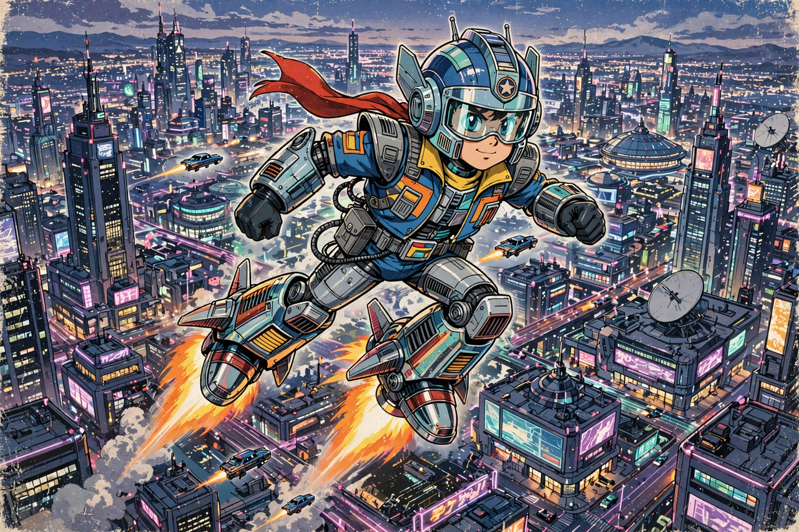

Astro Boy
Astro Boy, known in Japan as Tetsuwan Atom (鉄腕アトム, "Mighty Atom"), is a Japanese manga series written and illustrated by Osamu Tezuka, serialised from 1952 to 1968. It follows Atom, a powerful android boy created by Dr. Tenma to replace his deceased son, who becomes a hero defending humans and robots alike. The 1963 television adaptation was the first popular Japanese animated series and a foundational work of anime, establishing many of the medium's visual conventions.

| Astro Boy | |
|---|---|
| Japanese title | Tetsuwan Atom (鉄腕アトム) |
| Creator | Osamu Tezuka |
| Manga | 1952–1968, Shōnen magazine (Kobunsha) |
| Anime series | 1963–1966 (Mushi Production); remakes 1980, 2003 |
| Film | Astro Boy (2009, Imagi Animation Studios) |
Story
In a future where humans and robots coexist, Dr. Umataro Tenma, head of the Ministry of Science, builds Atom in the image of his son Tobio, killed in a traffic accident. Disappointed that the robot cannot grow, Tenma sells him to a circus; the kindly Professor Ochanomizu rescues Atom and becomes his guardian. Endowed with 100,000 horsepower, flight jets, machine guns, super-hearing, and a mechanical "electronic brain" able to judge good from evil, Atom repeatedly saves the world while advocating for robot rights and peace between species.
Influence
Tezuka's manga sold over 100 million copies, and the 1963 anime — produced by his studio Mushi Production with pioneering limited-animation techniques — ignited Japan's television animation industry and was among the first anime broadcast in the United States. Atom became a national icon in Japan: he was "born" on 7 April 2003 (his fictional birthdate), was granted honorary citizenship of Niiza City, and serves as a mascot for robotics and nuclear-safety awareness. The series influenced later works from Mobile Suit Gundam to Naoki Urasawa's acclaimed reimagining Pluto (2003–2009).
Adaptations
Besides the manga and three anime series, Astro Boy inspired a 2009 CGI feature film, video games, and stage productions. Studios such as Toei Animation and, later, Sunrise grew in the industry landscape Tezuka created.